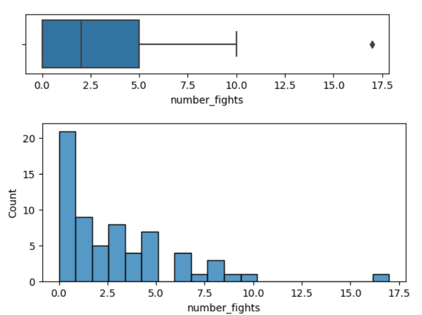

2. What do these quartiles tell us about the
shape and spread of the distribution? Explain.
| Q0 | Q1 | Q2 | Q3 | Q4 |
|---|---|---|---|---|
| 10 | 21 | 28 | 37 | 50 |
4. Examine the following contingency table
and fill in the conditional proportions accordingly. Based on this
information, do you think there exists an association between enjoying
sports and liking candy? Explain.
| Likes candy | Dislikes candy | Total | |
|---|---|---|---|
| Enjoys sports | 239 | 128 | 367 |
| Does not enjoy sports | 158 | 91 | 249 |
| Likes candy | Dislikes candy | Total | n | |
|---|---|---|---|---|
| Enjoys sports | 1.0 | 367 | ||
| Does not enjoy sports | 1.0 | 249 |

total_employed is the number of librarians in the
respective area. Describe a visualization that would support an answer
to the following question. Explain any decisions you make, including
(but not limited to) marks, channels, and labels.
How many librarians are employed in each area?
location_quotient measures the proportion of
librarians to total population, specifically, per 1000 people. Describe
a visualization that would support an answer to the following question.
explain any decisions you make, including (but not limited to) marks,
channels, and labels.
Is there a relationship between state and location_quotient? i.e. Are librarians more common in some states than others?